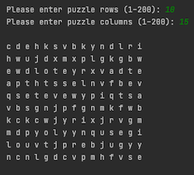
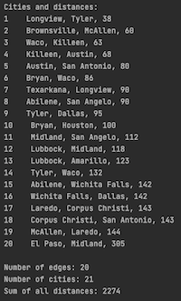

My name is Levon
I am a Computer Science student at the University of Texas at Dallas. Welcome to my site!
Here you can find some of the projects I've been working on. My resume can be found here
Projects
|  |
A 2D command line word puzzle creator and solver Creates a random puzzle of user specified dimensions, then solves it with the choice of 2 algorithms: one quicker than the other, especially noticeable with larger puzzles! In large puzzles, using a hash table for lookups can make searching the puzzles for words (looking both ways in all directions: vertical, horizontal, and diagonal, for every cell) faster by orders of magnitude |
|  |
This program reads a list of interconnected cities and distances (or any type of nodes), and gives a minimum spanning tree by printing only the connections needed for minimum total distance to connect all the cities The input is a CSV file in adjacency list format, and can be modified to include a different or much larger list of nodes Demonstrates the use of a hash table, disjoint sets, and Kruskal’s algorithm to generate a minimum spanning tree of all the nodes |
Contact & Information
Resume | GitHub | LinkedIn